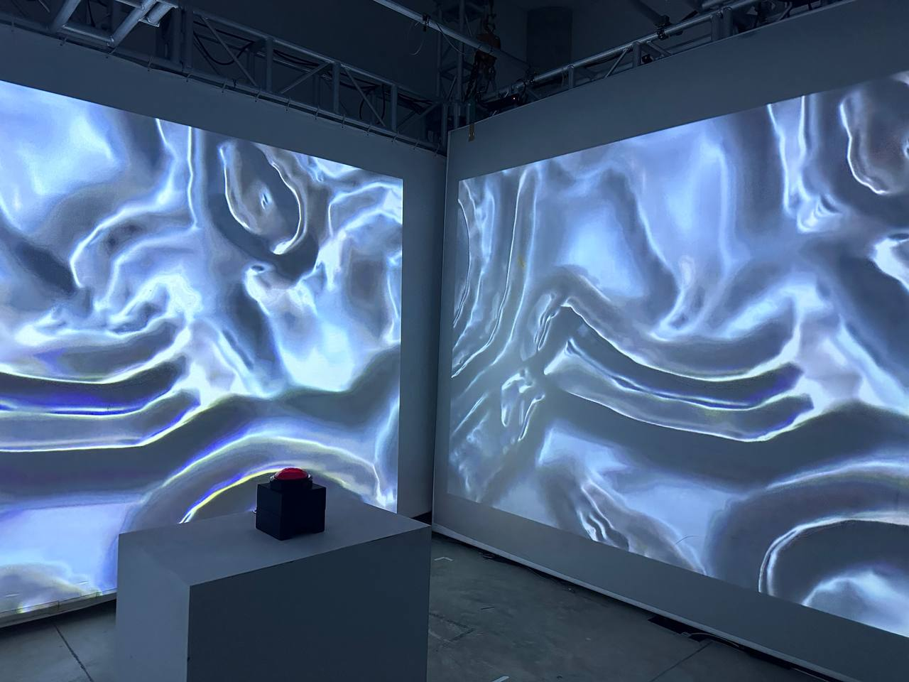
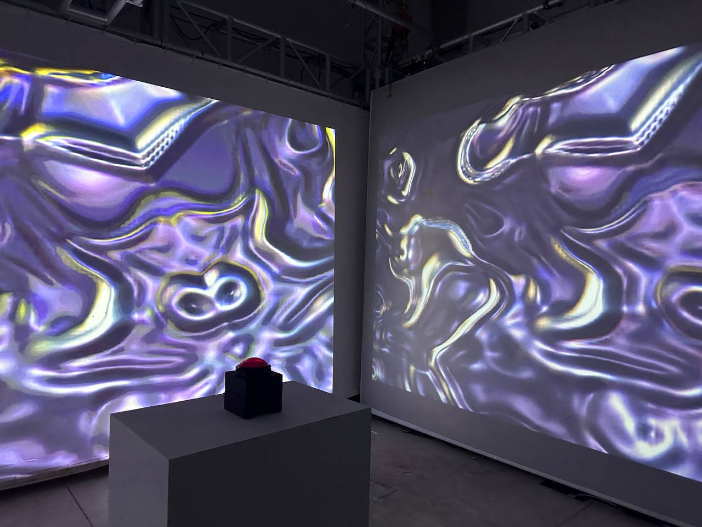
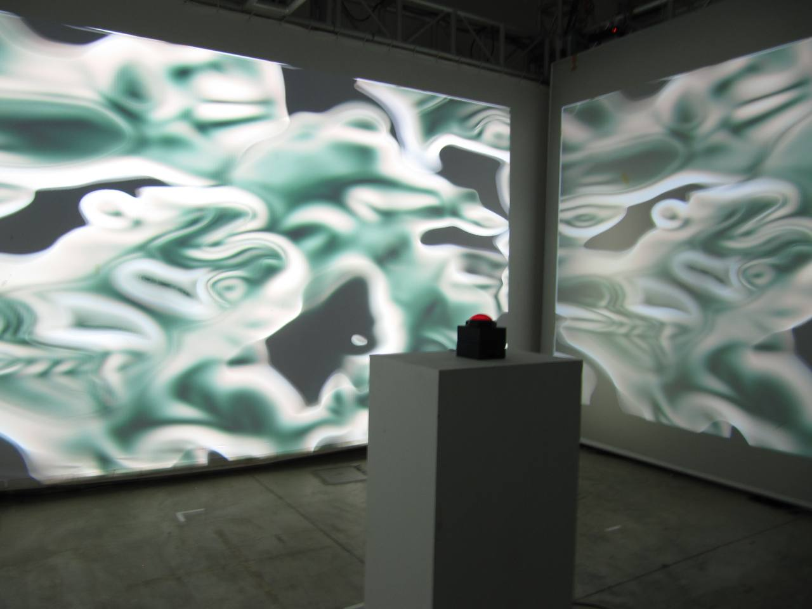
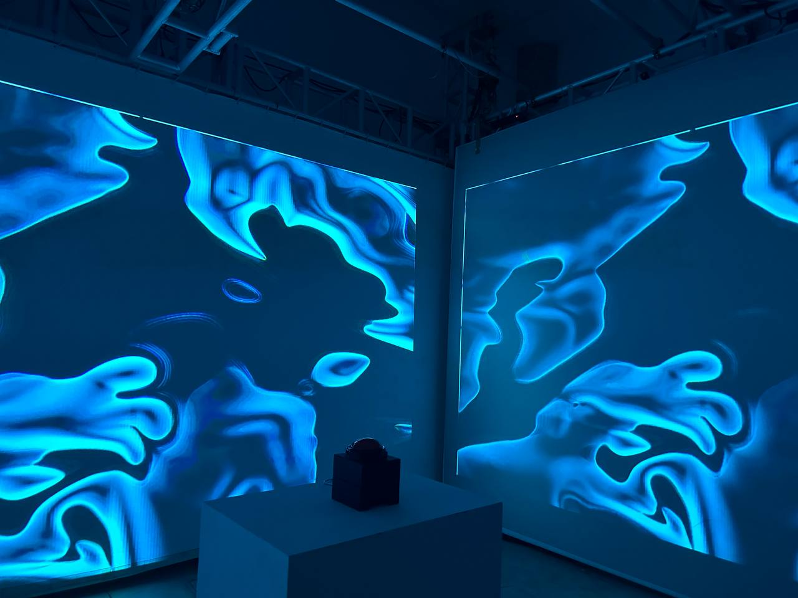
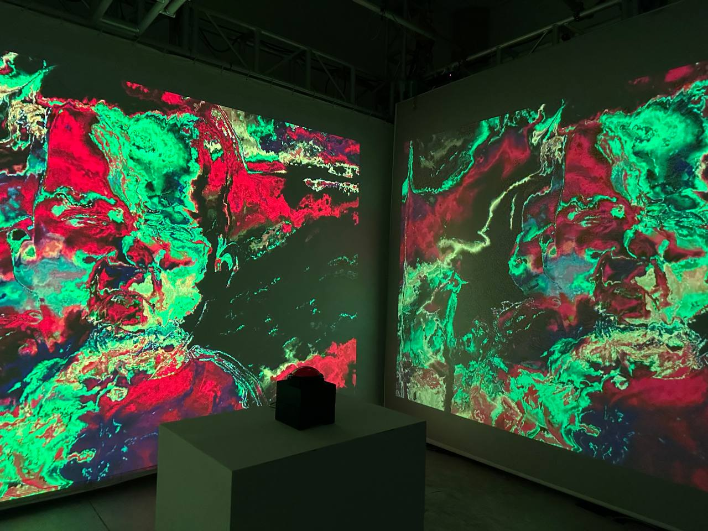
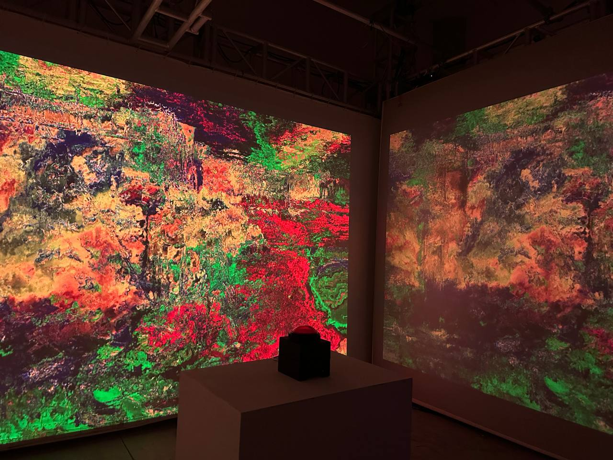
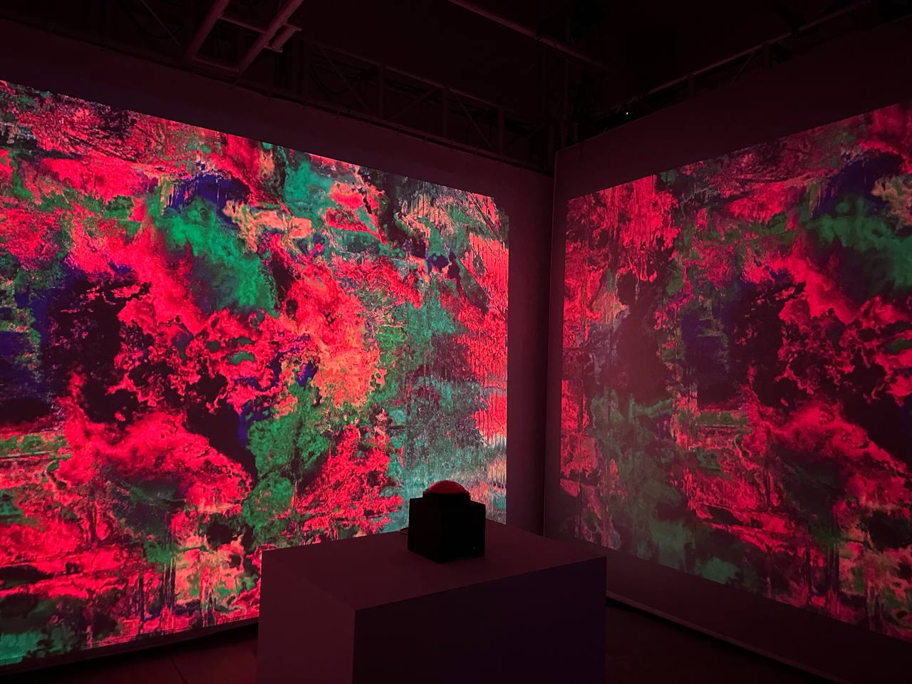
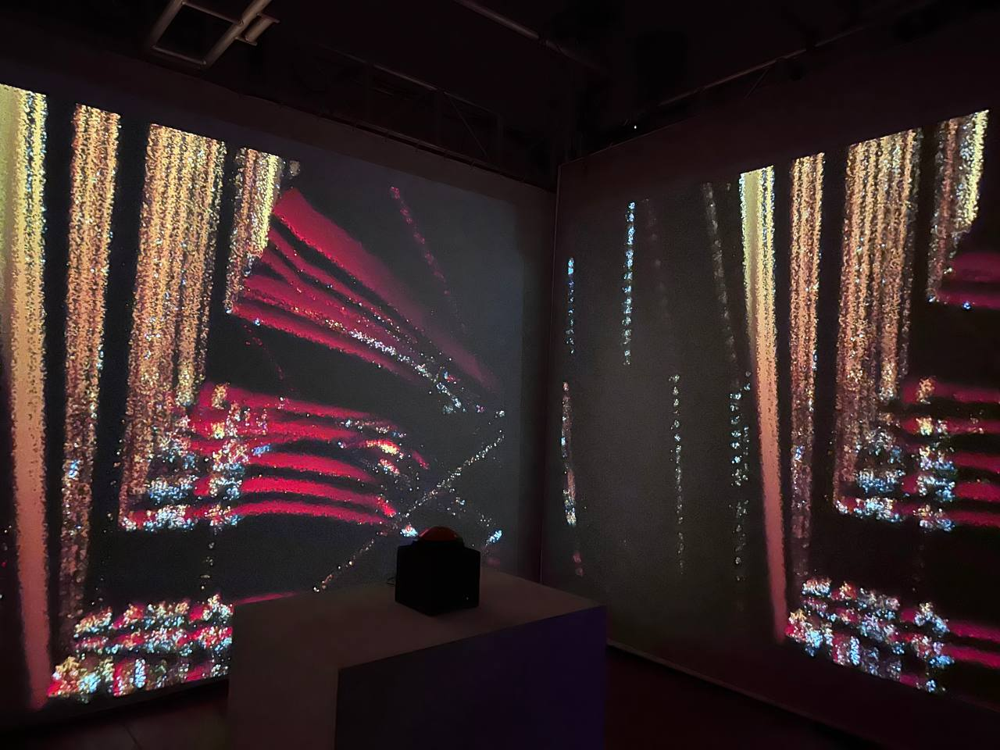
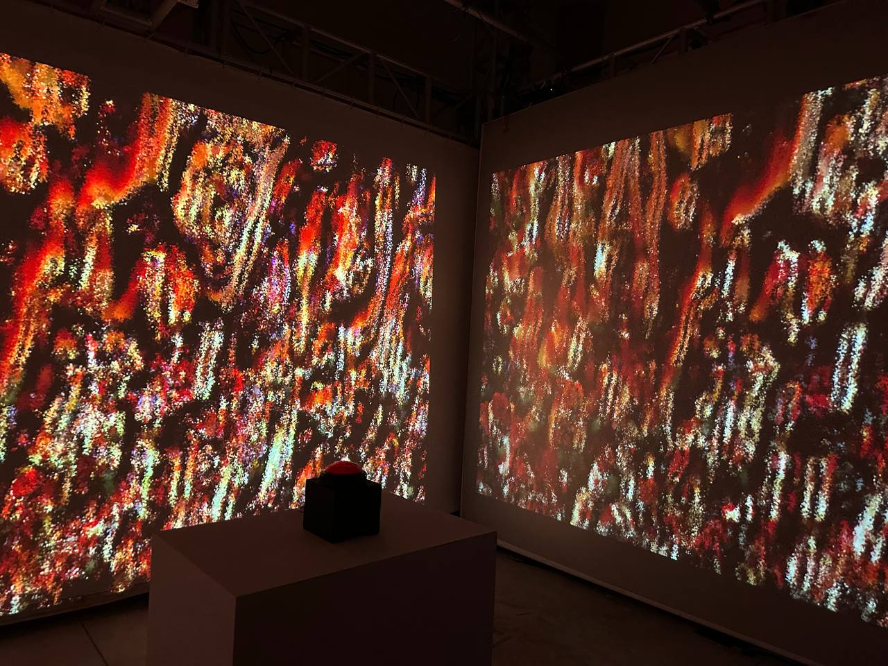

Human Error
ABSTRACT
Human Error is an interactive projection installation that will annoy participants through jarring audio and visuals. This provokes them to actively engage with a button as their only means of stopping the disturbance. This also plays in on our innate curiosity and urge to press buttons.
Done By: Lim Sin Xuan & Chuah Chun Ying
USER EXPERIENCE
Immersive and Psychological
Users can actively interact with the installation through the action of pressing the button.
They will be immersed through sensory elements such as audios and visuals using projection.
The user will also experience psychological distress/relief as they seek ways to stop it.
User Journey Map
Visuals Designed
5 Pleasant & 5 Unpleasant

Intense Rain

Forest

Fireplace

Forest

Ocean Waves

Alarm Clock

Construction

Explosion

Scratching

Baby Crying